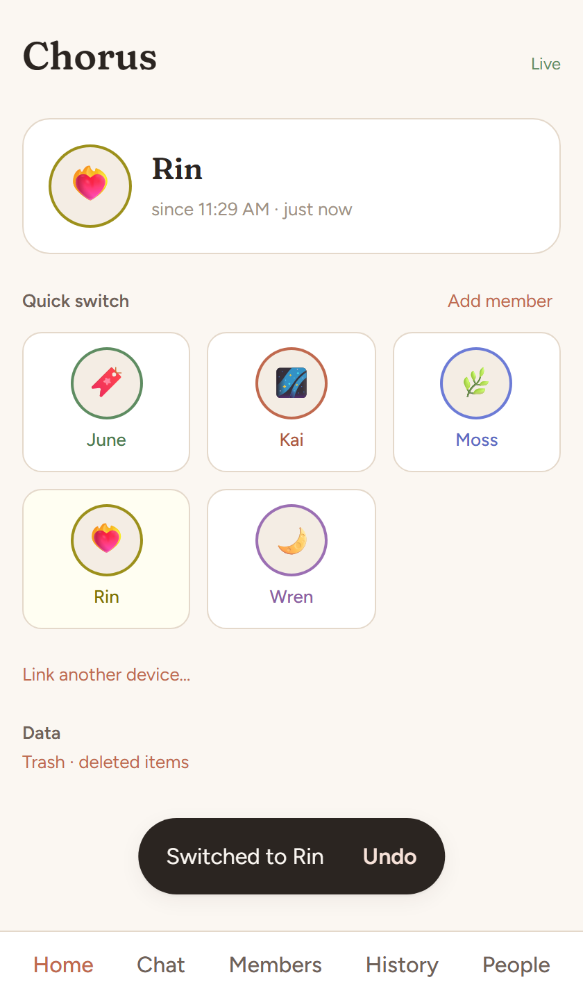
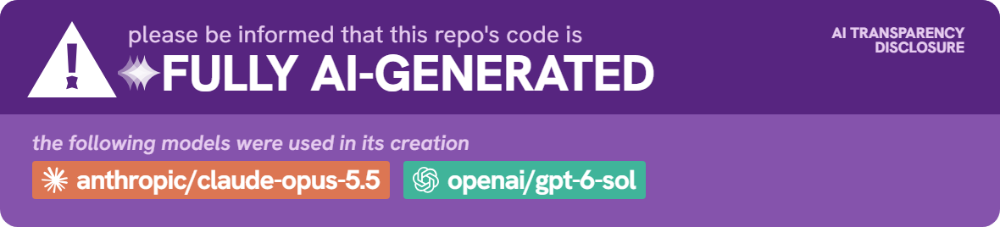

Chat as your members
Spaces and channels where every message is sent as one or more members, with proxy tags, sigils, replies, threads, reactions and rich formatting.
Chat as your members, keep journals, switch in one tap, and let the people you trust know who's around, on your terms.
Self-hosted and local-first. Android app, installable web app. Free and MIT-licensed.

Everything in one place
A replacement for PluralKit that doesn't need Discord: your own chat, your own journals, your own server.
Spaces and channels where every message is sent as one or more members, with proxy tags, sigils, replies, threads, reactions and rich formatting.
A home-screen widget and quick switcher that stay fast with hundreds of members, subsystems, co-fronting and co-con. Undo is always one tap away.
Each member gets a profile with posts, long-form entries, highlights and relationships, plus lists and custom feeds you can share.
Share a screenshot of just the messages you mean to. Hide or grey out the rest, redact names, and pick a style.
The Android app and the installed web app keep working with no connection, or with your server switched off, and catch up quietly afterwards.
Plain SQL tables, documented views, CSV and SQLite exports, a live event stream and webhooks, for dashboards, overlays and your own analysis.
Sharing, on your terms
What a friend with a two-hour delay and fuzzy times might see.
Host your own
Chorus is a single program with a SQLite database. Run it on a home PC reached over Tailscale, or on a Linux VPS with Caddy in front. Then open the invite link on your phone or in your browser.
Build it, then run the installer once as administrator. It sets up the service, Caddy and your first invite.
pwsh scripts/deploy.ps1 -Android
~\selfhost\chorus\install.cmdBuild a bundle, copy it over, and install. Debian 12 or Ubuntu 22.04 and up.
pwsh scripts/pack-linux.ps1
sudo ./install.shThe full guide, backups and restores are in the operations docs.
How it's made
Chorus's code was written by two AI models, Claude Opus 5.5 and GPT-6-sol, working in turns from a shared spec, with a human owner making the product decisions. Every decision, and every finding along the way, is in the repository.
